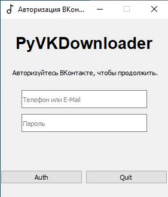
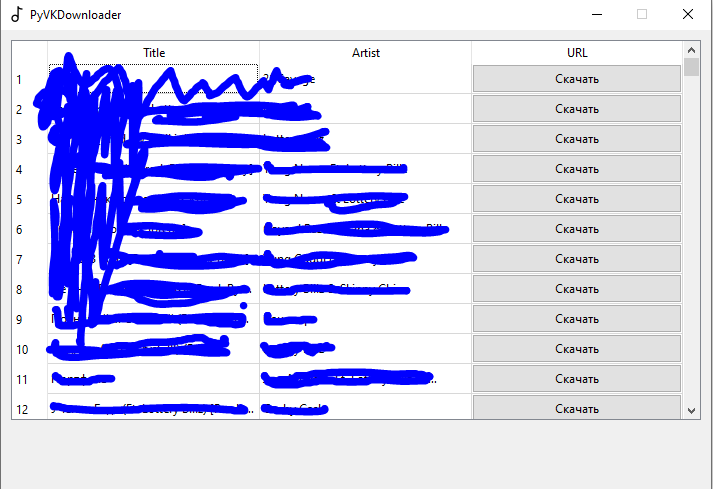
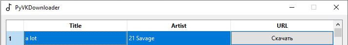

PyVKDownloader
PyVKDownloader - программа для скачивания аудиозаписей из вашего профиля ВКонтакте, написанная на языке Python, с использованием PyQt5
При создании программы были использованы библиотеки:
Пользовательская документация
1. Для того, чтобы получить доступ к своим аудиозаписям - авторизуйтесь

2. Ожидайте, пока загрузится ваша библиотека.

3. Выберите аудиозапись и нажмите "Скачать"
